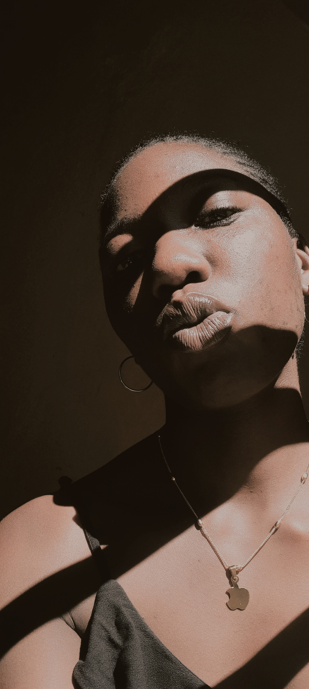
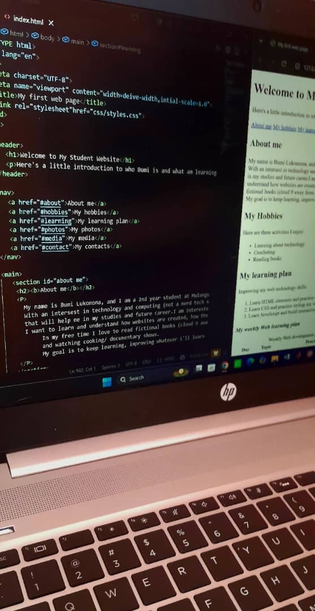
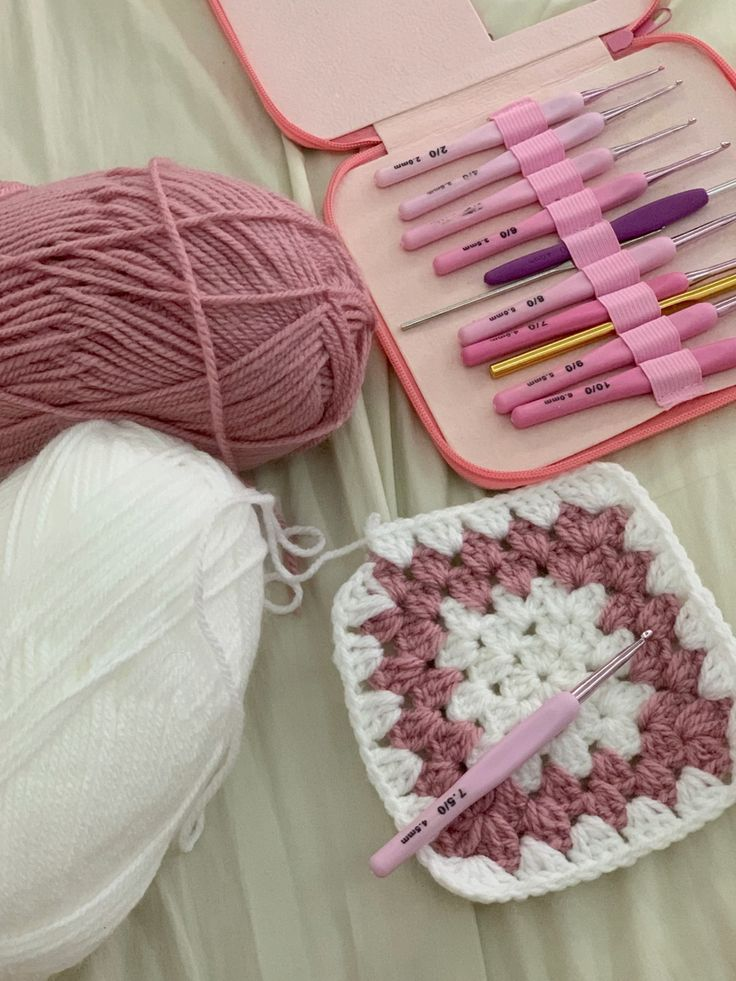

Welcome To My Portfolio
Hello, i'm Bumi, a second year student studying CyberSecurity at Mulungushi University.So far this semester I have being developing my skills in technology, programming and web development.
view my projectsAbout me
My name is Bumi Lukomona, and I am a 2nd year student at Mulungushi University pursuing CyberSecurity. With an intersest in technology and computing (not a nerd tech student).I enjoy developing skills that will help me in my studies and future career.I am interested in web development and cybersecurity, I want to learn and understand how websites are created, how they work and how they are kept secure. In my free time I love to read fictional books (cloud 9 away from reality), crocheting, braiding hair and watching cooking/ documentary shows. My goal is to keep learning, improving whatever i'll learn through practice and consistency.
My Hobbies
Here are three activities I enjoy:
- Learning about technology
- Crocheting
- Braiding hair
My learning plan
Improving my web technology skills:
- Learn HTML elements and practice building well-strcutured web pages.
- Learn CSS and practice styling my websites with colours, fonts and layouts.
- Learn JavaScript and build interactive features for my websites.
My weekly Web learning plan
| Day | Topic | Practice task |
|---|---|---|
| Monday | HTML | create a webpage with headings and paragraphs. |
| Wednesday | CSS | Style webpage using colours and fonts. |
| Friday | Javascript | Create a simple interactive button. |
My Projects
HTML5 and CSS
Learning HTML structure and how to use each attribute and how they work. Using CSS to style and layout websites.
This project helps me practise HTML and CSS.
Web Technology
Understanding how websites work,both in the frontend and backend. How every html structure being the "put everything in order",CSS styling and organising the website making everything look clean. Javascript, the backend and controlling part of the website.
Web technology improvements.
Python Programming
Small programs I create while learning Python.Python is used for machine learning and parts of Cybersecurity making tools.
keep_on_practicing_python.
Learn more: Explore the MDN Web Development Guide
My photos
Here are some photos from my life and interests
My Photos
Here are some photos from my life.



media
My introduction audio
Contact Me
Browser demonstration only — no message is sent.